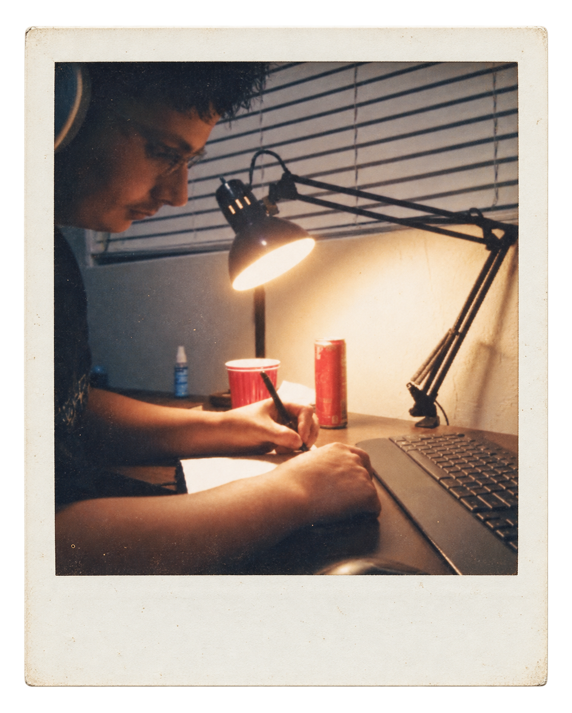
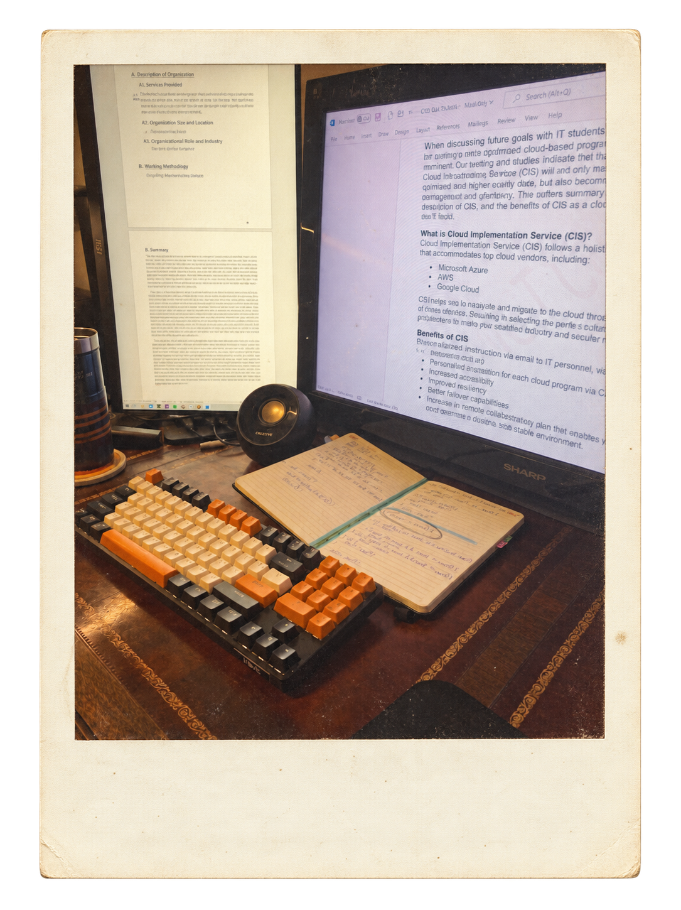
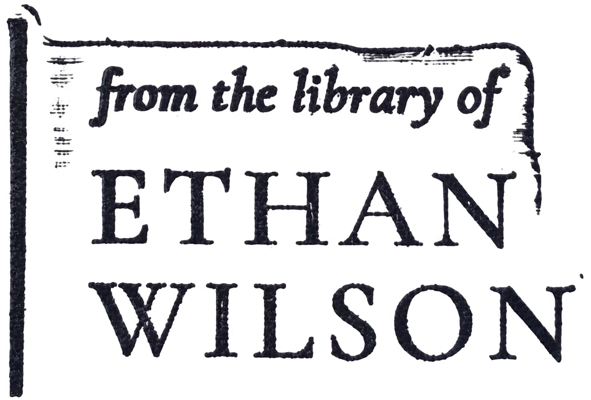

I'm 26, and even now there can be a particular kind of frustration that comes with learning something new.
Studying software engineering gives me plenty of reasons to think about that. There’s always another concept to understand, another problem to work through, another detail I’ve overlooked. It’s easy to measure a study session by how much material I finished. However, understanding is harder to measure.
Sometimes the most valuable work occurs on the very problem that keeps me from moving on.
Giving a Problem Enough Attention

Code gives you immediate feedback. It runs, produces an unexpected result, or throws an error. That feedback is useful, but getting a program to run is only part of learning how it works.
I want to be able to explain why a solution works, what assumptions it makes, and if the input changes, what is the result of it. Those questions are what insist upon me to study deeper. What they also require of me is to slow down, trace the steps, and notice where my explanation could perhaps become uncertain.
On a PowerPoint slide, an algorithm can look simple. Working through it by hand reveals the decisions hidden inside that simplicity. Each comparison, each repeated step, each change to a value has a purpose.
Taking the time to understand those details gives me something I can use again. The next problem may look different, sure, but I have a better place to start.
Reading, but with Room to Pause
A page can be easy to finish and difficult to absorb.
I can recognize every word in a paragraph, but you can bet that I'm still going to need time to consider what the author is saying. That's where the value is found. You undoubtedly may hear it well, but are you listening? A passage might deserve a second reading, a note in the margin, or a few minutes with the book closed. Now's your chance to really listen.

For me, I like having a collection of books I can return to. It leaves room for a different kind of relationship with reading: remembering an idea, reconsidering it, and finding something useful that I missed before.
There’s satisfaction in finishing a book, sure, but there’s also satisfaction in carrying one good thought away from it and continuing to carry that thought through aftwerward.
A Beginner, Again
15 years ago, I worked with an older man who told me that what he disliked most about being young was how much he didn’t understand. A lack of knowledge you could say. I can see what he meant. Experience does give you perspective that’s difficult to have when you’re just starting out. Still, I see it a little differently. At any age or stage of life, there’s more to learn and an opportunity to apply yourself. Taking initiative as an initiate- that's a yearning I never want to lose.
What is required for that? It takes a willingness to admit when an explanation didn’t stick, ask a "dumb" question, or revisiting a familiar concept. Sometimes it means spending another evening on something you expected to understand already. You should never distance yourself from this mindset, welcome it. Understand the value of it.
It's true, in those moments it can feel discouraging, especially when everyone else’s progress seems so visible. Finished projects and polished work are easy to share. But real novelty comes from the steady acquisition of knowledge, think of all those hours worth reframing toward learning something new.
I’m trying to give those hours a fairer place in how I think about learning. Recognizing what I don’t understand helps me figure out where to put my effort. Being able to explain something more clearly than I could yesterday gives me a reason to keep going.
